Get data
AP3N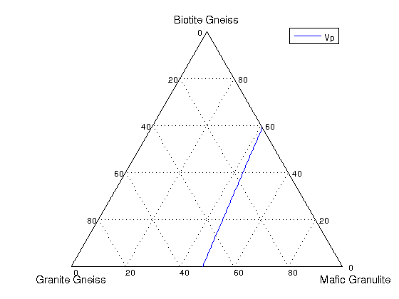
BOXN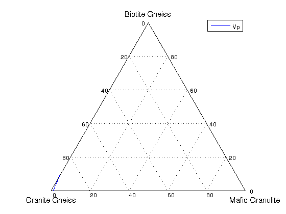
BUKO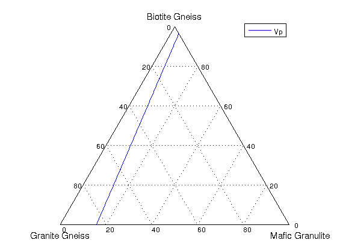
CDKN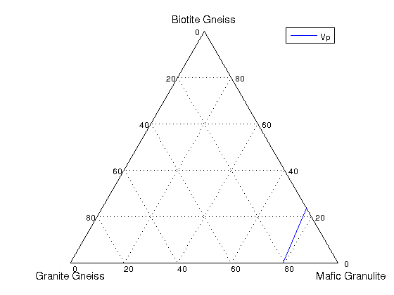
DELO
DHRN
DMCQData 6.190000 outside ternary <6.942000, 6.302000, 6.208000>endmember limits, skipping
DORN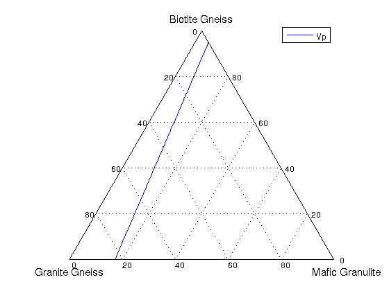
DVKN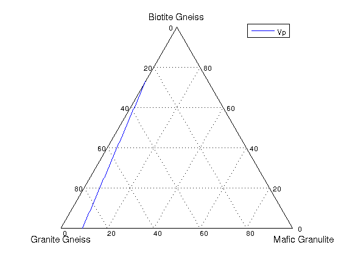
EPLO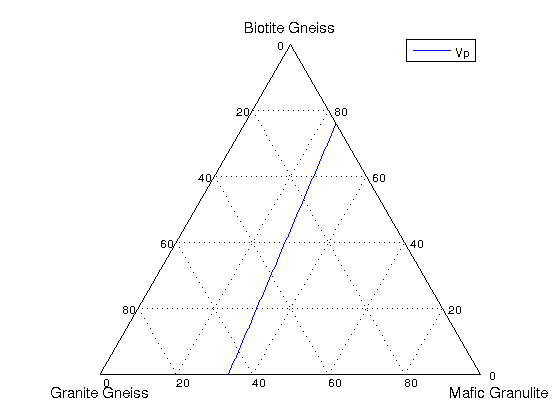
GALNData 6.190000 outside ternary <6.942000, 6.302000, 6.208000>endmember limits, skipping
GBLN
GLWN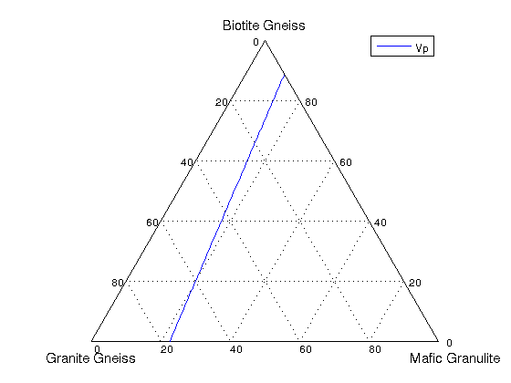
HPLNData 6.196909 outside ternary <6.942000, 6.302000, 6.208000>endmember limits, skipping
IHLN

KAJQ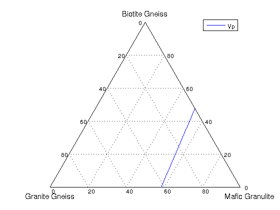
LDGN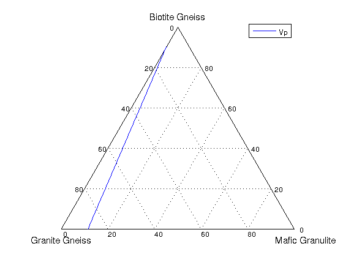
LGSN
LMN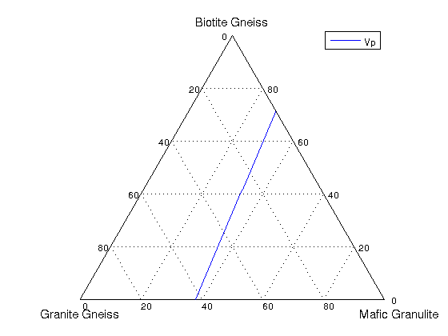
LUPN
MATQ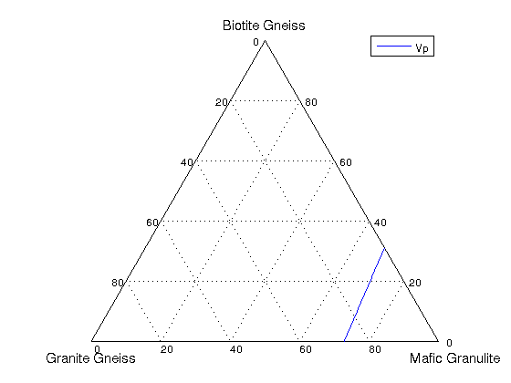
NMSQ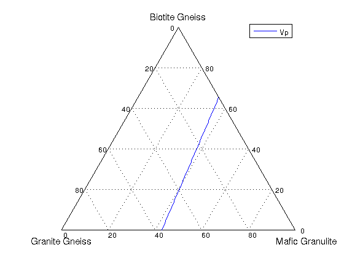
NODN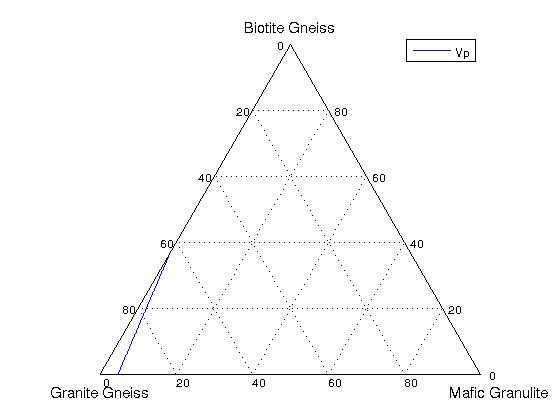
NOTN
PEMO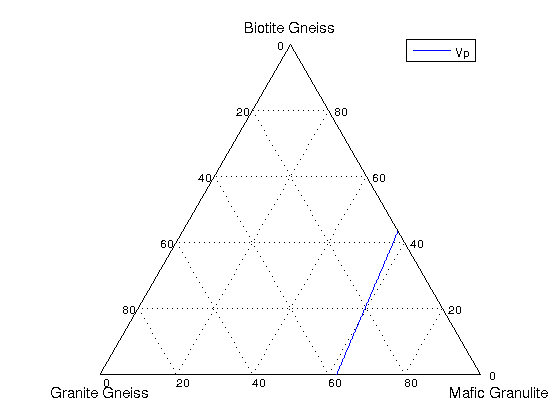
PKLO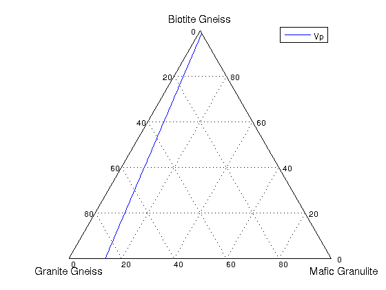
PNGN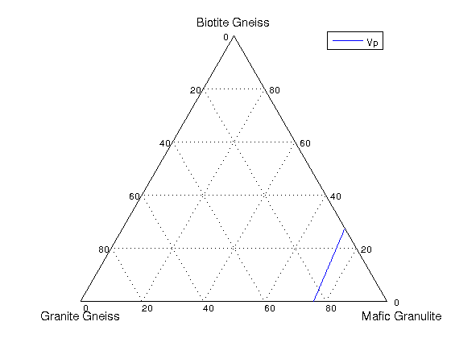
SADOData 6.193555 outside ternary <6.942000, 6.302000, 6.208000>endmember limits, skipping
SEDN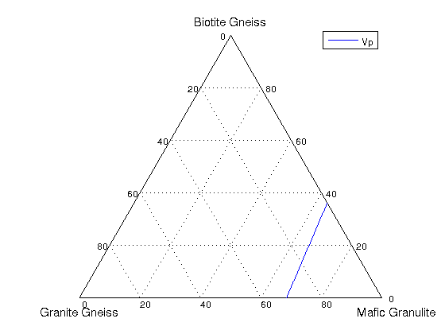
SHMNData 6.138638 outside ternary <6.942000, 6.302000, 6.208000>endmember limits, skipping
SJNN

SNLN
SRLN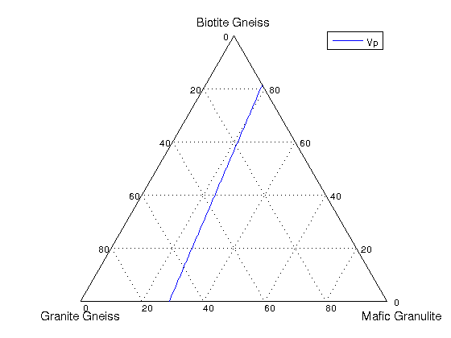
WAGN

YKW2
YRTN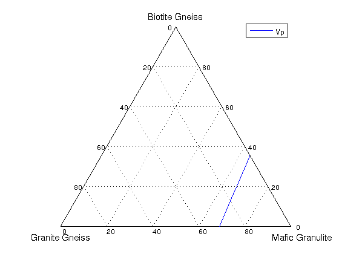